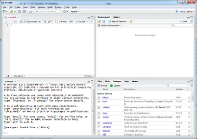

Chapitre 3 Présentation de l’interface et premières manipulations
Ce chapitre permet de découvrir l’interface de travail RStudio et les principales fonctionnalités pour débuter.
3.1 Une interface dédiée : RStudio

- Environnement de développement conçu spécialement pour R
- Interface utilisateur simple, conviviale, configurable et intégrant plusieurs outils
- Disponible sur http://www.rstudio.com
L’interface RStudio est composée de différents panneaux, dont l’arrangement peut être reconfiguré, incluant une console, un navigateur de fichiers et graphiques, l’espace de travail et l’historique des commandes. D’autres environnements graphiques existent, Rstudio semble le plus approprié à nos métiers.
3.2 Session et répertoire de travail
Session de travail R : commence à l’ouverture de RStudio et se termine en le quittant.
Répertoire de travail R : dossier à partir duquel le logiciel va chercher les fichiers de scripts et de données.
Tout ce qui a été fait au cours d’une session peut être enregistré dans le répertoire de travail :
- données
- historique des fonctions …
| Nouvelles fonctions | Attention |
|---|---|
setwd() pour définir un répertoire de travail |
Seulement / et pas \, chemin entre "path" |
help() et ? pour afficher l’aide |
. |
dir() pour lister un répertoire |
. |
Attention avec le répertoire de travail : si on l’écrit en dur setwd('...'), les anti-slash windows (\) doivent être remplacés par des slash(/)
Concernant le répertoire de travail, quelques conseils :
- Créer un nouveau répertoire pour un projet particulier qui sera votre répertoire de travail
- Créer des sous-répertoires dans ce répertoire : “./Data”, “./Figures”, “./Redaction”…
- Rassembler autant que possible les fichiers qui seront utilisés dans le cadre de ce projet et éviter d’aller chercher des fichiers ailleurs (sauf à inscrire dans le script une instruction de téléchargement exécutable par tous)
3.3 C’est à vous : créer un répertoire de travail
Sur le poste de travail, créer un dossier ‘premiers_pas’ à partir du menu ‘New Folder’ (cadran droite bas)
Dans Rstudio, définir ce dossier comme répertoire de travail directement en utilisant
setwd('')Appeler l’aide en ligne par
?setwdouhelp(setwd)Faire une recherche dans la partie Help de RStudio
Créer un script à partir du menu ‘File/New File/R script’ et l’enregistrer sous ‘mes_tous_premiers_pas.R’
Lire le contenu du répertoire de travail avec
dir()
3.4 Prise en main de la console
- Effectuer et afficher les résultats de calculs de base
(+, -, *, /, ^, ...) - Utiliser des fonctions spécifiques :
sum,abs,round… - On peut remonter dans l’historique des fonctions pour en rappeler une
| Nouvelles fonctions | Attention |
|---|---|
sum() pour sommer un résultat |
Séparateur décimal point (.) |
abs() pour retourner la valeur absolue |
. |
round() pour arrondir un nombre |
. |
| flèches pour naviguer dans l’historique | . |
3.5 Création d’une variable
On assigne un contenu à une variable au moyen de <-
La flèche d’assignation peut être écrite avec le raccourci clavier alt + “-” (tiret du 6 ou signe ‘moins’ du pavé numérique).
ma_variable <- 2
ma_variable <- "Toulouse"
ma_variable <- c("Toulouse", "Nantes", "Strasbourg")
ma_variable <- 1:10\(\rightarrow\) Les variables peuvent être numériques, de type texte ou booléen (TRUE/FALSE) et elles peuvent être réutilisées.
| Nouvelles fonctions | Attention pour le nommage des variables |
|---|---|
ls() pour faire lister les variables existantes |
Casse -> seulement minuscules |
paste() pour concaténer des variables textes |
Pas de caractères spéciaux ni accentués |
rm() pour supprimer une variable |
Pas d’espaces ni tirets (-) ; préférer (_) |
Adopter des règles de nommage cohérentes, par exemples celles-ci. ATTENTION : un nom de variable ne peux pas commencer par un chiffre et certains noms sont interdits (voir 4.6)
3.6 C’est à vous : créer et manipuler des variables (Exercice 1)
- Dans la console, créer deux variables numériques a et b de valeur 5 et 4 par assignation :
a <- 5etb <- 4
- Que se passe-t-il dans le panneau Environnement (en haut à droite) ?
- Faites maintenant un calcul avec ces variables comme
a+beta*b.
- Vous allez ensuite créer une troisième variable à partir d’un calcul sur les deux premières :
c <- a + 3 * b
- Vous pouvez afficher la liste des variables avec la fonction
ls().
- Modifiez maintenant la valeur de
aen lui donnant la valeur 10. Vérifiez votre ré-assignation dans la panneau Environement.
- Créez une variable chaîne de caractère :
t <- 'texte'(vous pouvez également utiliser les doubles quotes comme “texte” mais ne les mélangez pas). - Concaténez (mettez bout à bout)
aettavec la fonctionpaste(a, t). Que constatez-vous ? - Pour plus de renseignements sur la fonction
paste(), pensez à utiliser l’aide de R avechelp(paste). - Créez maintenant les variables
A <- 15etB <- 12. Que voyez-vous dans la panneau Environement ? - Vous pouvez supprimer la variables A et B en utilisant la fonction
rm()(utilisez l’aide de R pour avoir plus de renseignements sur la fonctionrm).
Résultat attendu :
## [1] 5## [1] 4## [1] 9## [1] 20## [1] 17## [1] "a" "b" "c" "df" "ma_variable"## [1] 17## [1] "texte"## [1] "10 texte"3.7 Utilité des scripts
- Garder la trace d’une longue succession de lignes de code
- Pouvoir exécuter ce code (pas à pas ou en entier)
- Le modifier plus rapidement pour l’adapter
- Pouvoir le réutiliser avec de nouvelles données
| Nouvelles fonctions | Attention |
|---|---|
# pour des commentaires explicatifs du code |
Importance de bien commenter |
print() pour afficher sur la console |
. |
Ctrl+Entrée pour lancer un script ligne par ligne |
. |
Utilisation simple de R \(\rightarrow\) mode console. Chaque ordre, bout de code est rentré et exécuté au fur et à mesure sur la console.
Actions plus complexes, longues, nécessitant une maintenance, des modifications \(\rightarrow\) travailler à partir de la fenêtre éditeur. Les parties de code sont enchaînées et enregistrées sous la forme d’un fichier texte réutilisable par la suite.
Toujours utiliser des commentaires, indiquer plus le ‘pourquoi’ que le ‘quoi’. Permet de pouvoir mieux comprendre ce que l’on a fait lorsqu’on reprend un programme plus tard ou lorsqu’on le donne à quelqu’un.
3.8 C’est à vous : utiliser un script (Exercice 1bis)
- Recopier le script ci-dessous et changer les paramètres pour le re-exécuter plusieurs fois
- Sauvegarder ce script dans votre répertoire de travail, fermez le
- Redémarrer votre session RStudio, le rouvrir, et ré-exécuter le script
# Supprimer toutes les variables existantes
rm(list = ls())
# Création de mes variables taille et poids ; attention au point décimal
poids <- 91
taille <- 1.87
# Calcul de l'IMC : poids sur taille au carré
imc <- poids / (taille ^ 2)
# Affichage du résultat
print (imc)## [1] 26.023053.9 Installer et charger un package
Pour manipuler nos données, nous allons nous servir de fonctionnalités présentes dans le package tidyverse.
La première fois que l’on veut utiliser un package, il faut le télécharger sur notre machine, avec install.packages() :
install.packages("tidyverse")Puis à l’ouverture d’une nouvelle session R, le charger (si on a besoin de ses fonctions), avec library() :
library(tidyverse)Le package est prêt à être utilisé !
Pour appliquer une fonction à un objet, la syntaxe est :
nom_de_la_fonction(objet, attribut1, attribut2, ...)Pour stocker le résultat de cette fonction dans une variable :
ma_variable <- nom_de_la_fonction(objet, attribut1, attribut2, ...)Une erreur fréquente est :
Error in nom_de_le_fonction() : impossible de trouver la fonction "nom_de_la_fonction"
Cela signifie que le package auquel appartient la fonction n’est pas chargé, voire pas installé.
Il peut exister des fonctions homonymes dans différents packages. Sans précision, la fonction qui sera appliquée sera celle du package chargé en dernier. Pour spécifier :
nom_du_package::nom_de_la_fonction(objet)